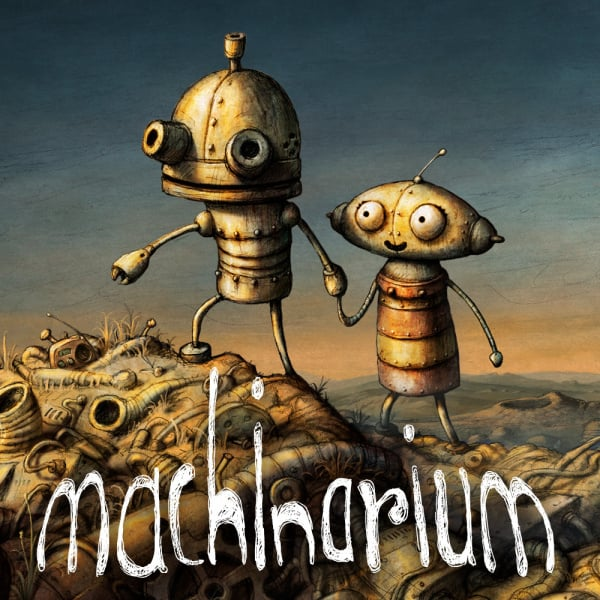
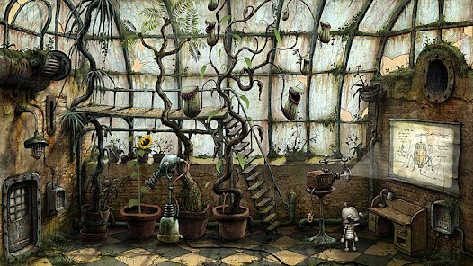

"Machinarium" je avanturistička igra u kojoj igrač preuzima ulogu malenog robota zvanog Josef, koji se probudi u hrpi smeća u napuštenom gradu. Cilj je istražiti okolinu, rješavati zagonetke i prepreke te pronaći svoju izgubljenu djevojku. Igra je poznata po ručno crtanoj grafici i izazovnim logičkim zagonetkama koje zahtijevaju kreativnost i promišljanje.
 